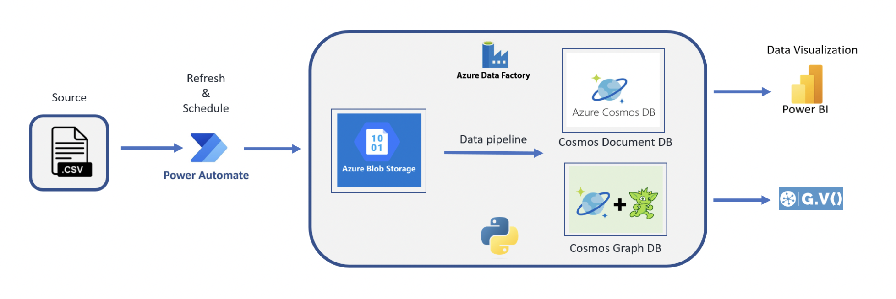
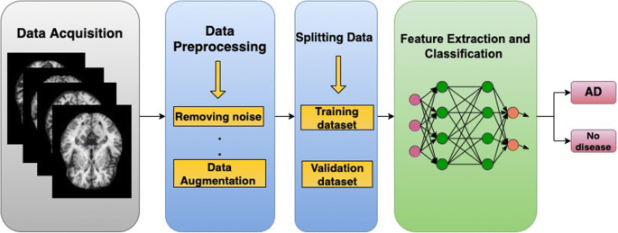
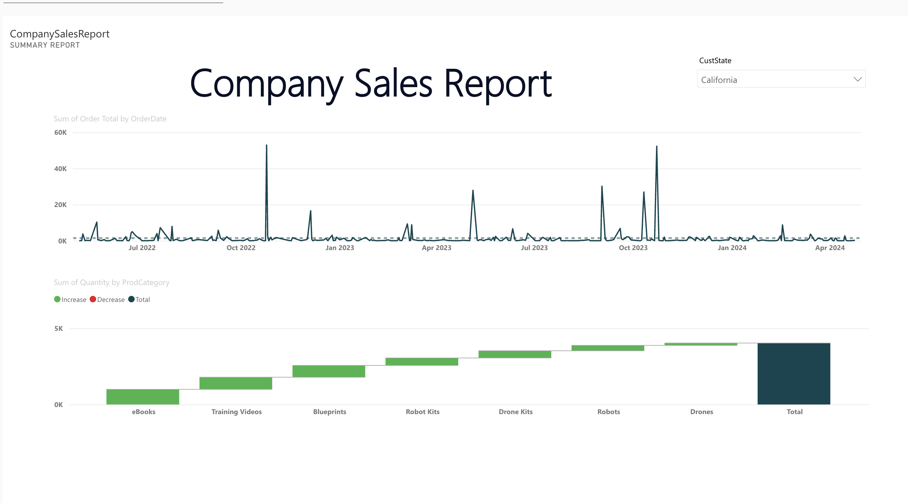

In this project, we used Django to build our webapp. Led the implementation of an EHR system for medical reports storage and analysis, resulting in increased efficiency
and security in report management. Created a data extraction feature to extract medical report data, enhancing analysis capabilities,
utilized Python, Django, MySQL, Bootstrap4, HTML/CSS, and OpenCV.

In this project, we connected Power Automate to Azure Blob Storage for file transfers from OneDrive. Using Azure Data Factory, we cleansed, transformed,
and aggregated files, then imported them into Azure Cosmos Document DB and Cosmos Graph DB via Gremlin API.
This analysis revealed consumer behavior patterns, enhanced customer satisfaction, and evaluated annual business trajectories.

In this project, I applied classification model and predictive modeling techniques, such as Linear Regression, Gradient Boosting, Logistic Regression, Decision Tree and Random Forests.
With Python and scikit-learn, I implemented different machine learning models for the early detection of Alzheimer's disease, I fine-tuned and optimized it to achieve a remarkable accuracy rate of 86%.

This Power BI sales report dashboard provides a comprehensive view of sales performance across regions. It highlights key KPIs such as highest-selling products and top-performing states using a slicer for dynamic filtering. A waterfall chart visualizes revenue contributions,
while a line graph tracks sales trends over time. The dashboard enables quick, data-driven insights to optimize product strategy and regional targeting.

Developed a fully functional website using MERN stack, showcasing skills in React, MongoDB, Express, and Node.js and
delivered the project within the 3 months’ timeline.

In this project, built a system that makes it feasible to authorize, distribute and analyze the Vaccinations offered for various networks.
The system helps communication between distributors and manufacturers, it also gives the health safety association to monitor the entire system and approve vaccinations. Along with this the patients can consult various doctors registered on the system.